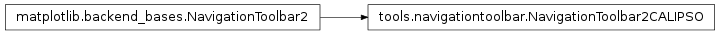

NavigationToolbar2Calipso¶
Custom toolbar implementation deriving from the matplotlib.backend NavigationToolbar2, The TkAgg port is not used because we specifically implement our own GUI and therefore to not want to draw the TkAgg’s navigation bar. So we declare this class and leave it mostly bare, thus nothing will be rendered to the screen but we still have access to the button functions and can bind them to our own GUI

-
class
NavigationToolbar2CALIPSO(canvas, master)[source]¶ Custom toolbar derived from matplotlib.backend, since we won’t be specifically displaying any of their provided TkGUI, we will be creating our own GUI outside of the toolbar and simply using the functions provided by NavigationToolbar2. Thus we strip the toolbar of anything GUI related
Parameters: - canvas – The main canvas of the application that will be drawn to
- master – The master program (Calipso)
-
draw_rubberband(event, x0, y0, x1, y1)[source]¶ Draws a rectangle rubber band to indicate area that will be zoomed in on
Parameters: - event – Tkinter passed event object
- x0 – top left x coordinate
- y0 – top left y coordinate
- x1 – bottom right x coordinate
- y1 – bottom right y coordinate
-
release(event)[source]¶ Upon mouse release while zooming, the rectangle is deleted and the application is zoomed to that view
Parameters: event – Tkinter passed event object